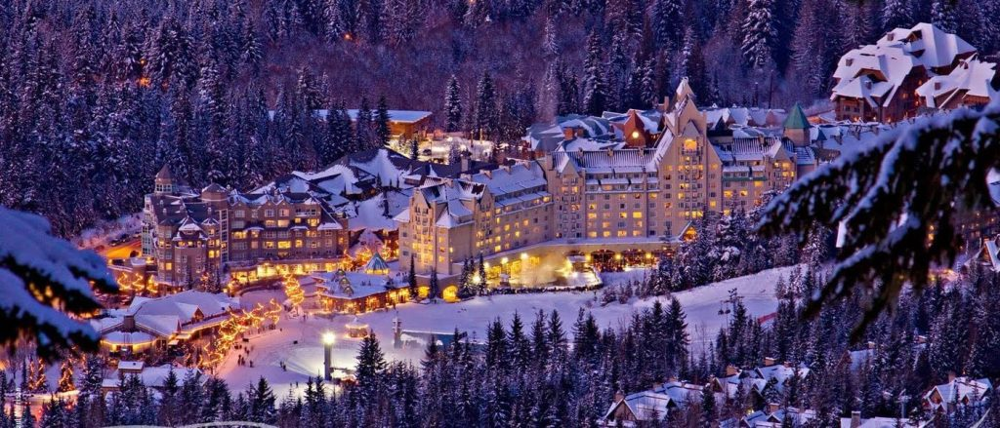
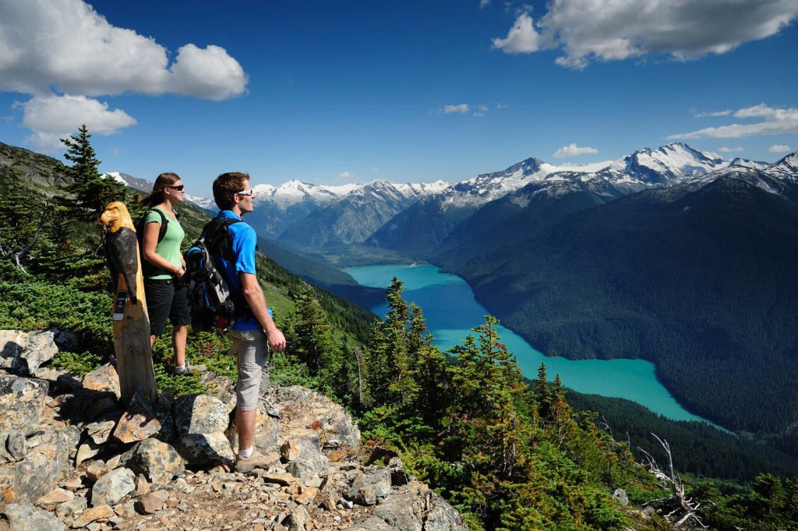
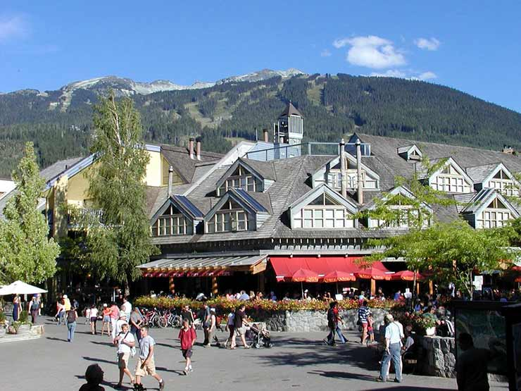
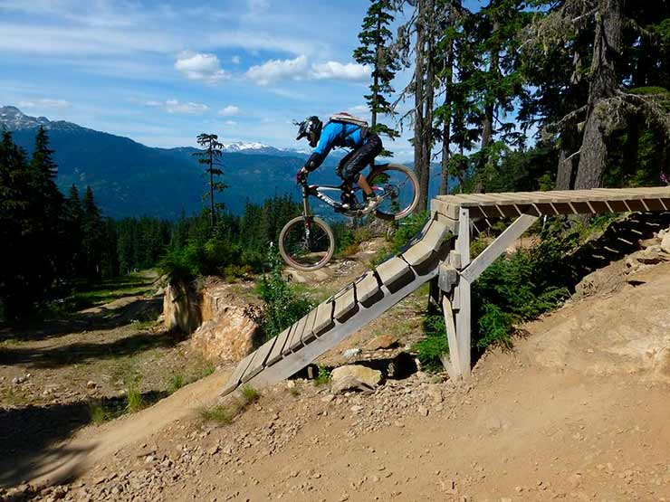
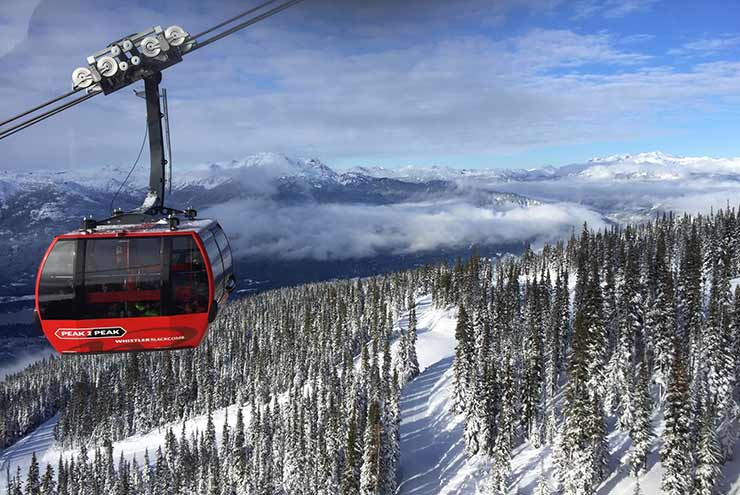
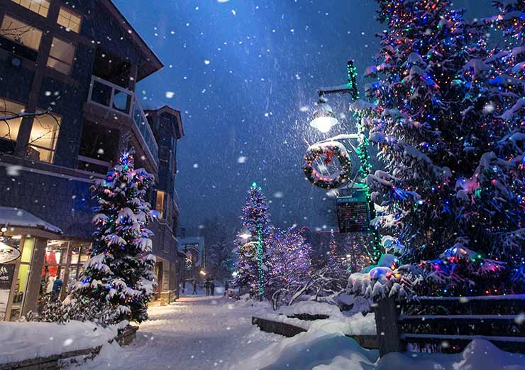

| Voltar para pagina inicial |
| Conhecendo Whistler |
Informações gerais de Whistler
|
|
Whistler … Vamos tentar descrever a cidade: – um vilarejo de montanha, com aquela exata arquitetura que você espera encontrar neste tipo de lugar, fazendo com que o conjunto seja absolutamente lindo – parece cartão de natal!– a 130 km de distância de Vancouver – uma capital sempre classificada entre as “3 melhores cidades para se viver no planeta”, confira na web. |
Mapa: |
|  |
Como é o clima em Whistler:
InvernoO inverno em Whistler, que dura de dezembro a fevereiro, traz temperaturas médias de cerca de -5°C, com raras quedas abaixo de -10°C devido à proximidade com a costa. No entanto, nas montanhas, as temperaturas podem ser até 10°C mais baixas, chegando a -15°C. Para desfrutar das atividades de inverno, roupas térmicas e à prova d'água são essenciais, dado o clima propenso a chuva e neve. A estação é popular para esportes de inverno, incluindo esqui e snowboard. PrimaveraA primavera (março a maio) continua propícia para esportes de inverno, com temperaturas mais amenas. À medida que o clima aquece, a vegetação se renova, os insetos reaparecem e os pássaros migratórios retornam. Caminhadas pelos parques são uma ótima opção. VerãoO verão (junho a agosto) é ideal para quem busca temperaturas mais quentes, variando de 13°C a 27°C. As trilhas nas montanhas e o Whistler Mountain Bike Park oferecem atividades ao ar livre. O verão é geralmente seco e agradável para aproveitar ao máximo. OutonoO outono (setembro a novembro) traz temperaturas mais frias, iniciando em cerca de 12°C e gradualmente tornando-se negativas. As árvores exibem tons de amarelo, vermelho e marrom, criando paisagens coloridas. As chuvas aumentam à medida que o inverno se aproxima, sendo novembro o mês mais chuvoso. Roupas quentes e guarda-chuvas são aconselháveis. |
 |
O que ver e fazer em Whistler, Canadá |
| O texto descreve as atrações e atividades disponíveis em Whistler, Canadá, para os visitantes. Isso inclui o centro da cidade com seus restaurantes e vida noturna, o Olympic Park que oferece trilhas e pistas de esqui, a Superfly Zipline que proporciona vistas panorâmicas, o teleférico Peak 2 Peak Gondola com vistas deslumbrantes, a estação de esqui Whistler Blackcomb, os lagos azul-turquesa do Joffre Lakes Provincial Park, o Mountain Bike Park para entusiastas do ciclismo, o emocionante Sliding Centre para passeios de trenó, e o Bear Viewing Tour para observar ursos negros em seu habitat natural. O texto também menciona custos de viagem e a importância do seguro viagem para uma visita segura e tranquila à região. |
|
    |